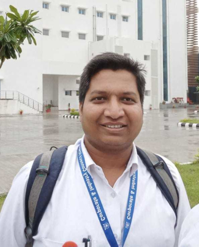

Library IT
Library automation, Linux servers, web services, RFID workflows and system administration.
Library and Information Assistant at the Learning Resource Center, Indian Institute of Technology Indore, working across library systems, digital repositories, e-resources, research visibility and scholarly communication.

Library and Information Assistant
A practical profile built around reliable library services, open-source systems, digital scholarship and continuous improvement.
Library automation, Linux servers, web services, RFID workflows and system administration.
Institutional repository development, DSpace administration, metadata workflows and digital archiving.
Research visibility, bibliometrics, scholarly communication, e-resource support and discovery services.
From library traineeships to technology-enabled academic library services.
Learning Resource Center · Indian Institute of Technology Indore
Library technology • Digital services • Research supporte-ShodhSindhu Consortium · INFLIBNET Centre, Gandhinagar
E-resources • Consortium services • Technical supportCentral Library · Indian Institute of Technology Bhubaneswar
Library operations • User services • Digital systemsCentral Library · Indian Institute of Technology Gandhinagar
Library operations • Technical servicesKoha, RFID, circulation workflows, cataloguing support and OPAC services.
DSpace, metadata, repository maintenance, discovery and digital archiving.
Scopus, OpenAlex, bibliometrics, R, research visibility and scholarly metrics.
Ubuntu servers, WordPress, HTML/CSS/JS, integrations and troubleshooting.
Hands-on work connecting open-source technology with library and research workflows.
Library automation, OPAC services, technical administration and workflow improvement.
View implementation ↗ 02Institutional repository administration, digital archiving and scholarly content access.
View implementation ↗ 03Responsive library website services, discovery interfaces and e-resource access.
View implementation ↗ 04Selected developed and forked projects for research, library and productivity workflows.
Explore projects ↗Doctoral research focused on developing a multidimensional quality assessment framework for Indian scholarly journals beyond indexing status.
Publications & research ↗Sardar Patel University · 2011–2013
Library & Information Science · 2018 & 2019
Workshops, training, resource-person sessions and library technology events.
For professional collaboration, library technology discussions, research support or academic networking.